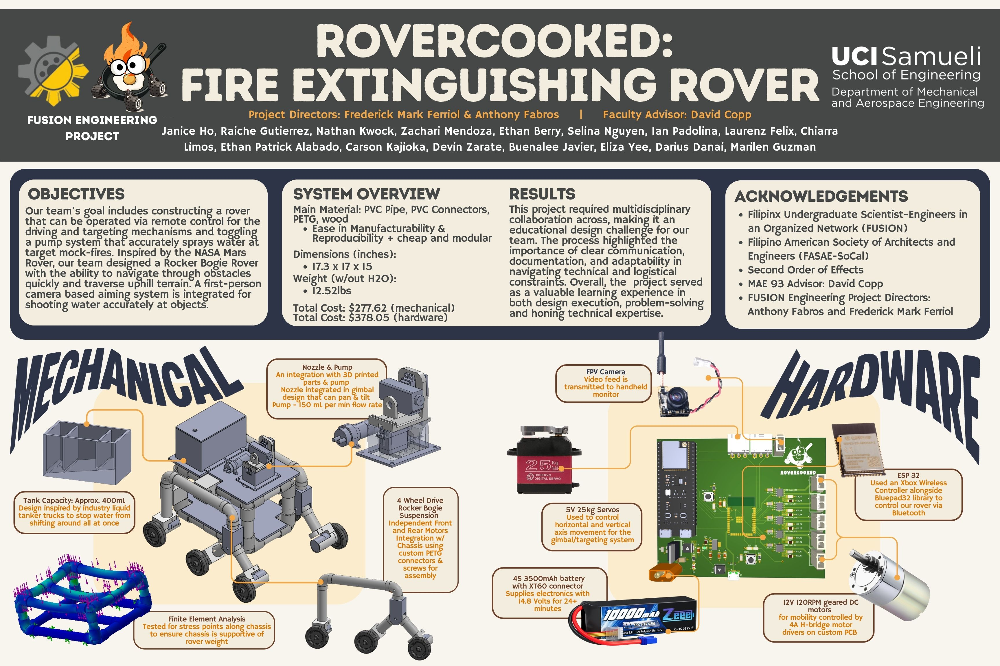

Objectives
The team set out to build a remote-controlled rover capable of driving over rough terrain, aiming at a target, and toggling a pump system to spray water accurately at mock fires. Inspired by NASA's Mars rovers, the team designed a rocker-bogie suspension system to navigate obstacles and climb uphill terrain, paired with a first-person camera view for precise aiming.
System Overview
The chassis was built primarily from PVC pipe and connectors along with 3D-printed PETG parts and wood, chosen for ease of manufacturing, reproducibility, and low cost. The finished rover measured roughly 17.3 by 17 by 15 inches and weighed about 12.5 pounds without water, with a total build cost of just under $660 across mechanical and hardware components.
Mechanical Design
My primary contribution was designing and validating the rover's mobility system: a four-motor, six-wheel rocker-bogie suspension modeled after NASA's Mars rover platform. The design lets each side of the chassis pivot independently, so all six wheels stay in contact with uneven ground — distributing load evenly, resisting tipping, and maintaining consistent ground clearance without relying on a spring suspension.
Early concepts explored a PVC-pipe rocker-bogie frame with a triangular linkage geometry, prioritizing independent motors on each wheel for precise steering and the ability to climb over obstacles and inclined terrain. From there, the design moved through several fabrication iterations: an initial four-motor, six-wheel PVC and PETG frame with the rocker and bogie arms joined by custom plates, followed by refined motor and wheel mounts with M3 mounting holes, added structural support, and a bolt-secured wheel mount that replaced an earlier 3D-printed extrusion for a more reliable fit.
Wheel selection was also part of this process — comparing a smooth polypropylene caster wheel against a treaded rubber RC-truck wheel and tire set with a hex adapter to couple directly to the motor shaft, ultimately choosing the option that paired better traction with a simpler motor connection.
Results
The finished rover successfully combined mechanical, electrical, and controls subsystems into a single working platform, earning Best Overall and Sponsor's Choice honors at the 2026 FUSION Engineering Project showcase. The rocker-bogie suspension performed as intended, improving navigation through rough terrain by roughly 80% over earlier fixed-frame designs.